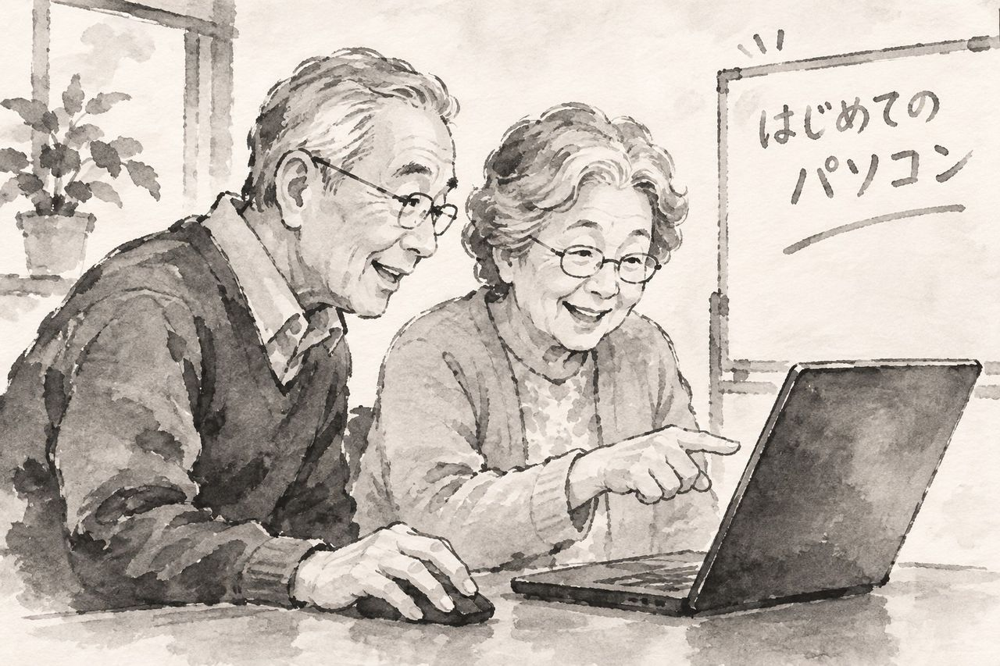
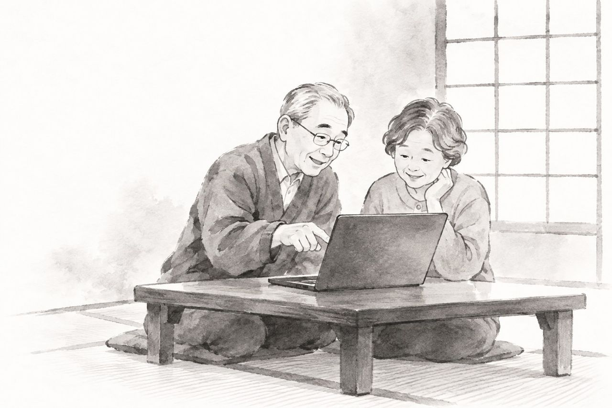

AI画像生成の指示（プロンプト）の書き方｜5つの材料と直し方
指示が足りないと、残りはAIが補う
社内の掲示物や、資料の挿絵がほしいとき。
絵を描くのは苦手でも、AIに頼めば数十秒で絵が出てきます。
でも、出てきた絵が思ったものと違うことがあります。
その理由が、授業ではっきり見えたことがあります。
4つのAIに、まったく同じ指示を入れたときのことです。
「老夫婦が、パソコンを学んでいる水墨画の画像を作ってください」。
出てきた絵は、4つとも全部違いました。
理由は単純で、指示に書いていない部分を、それぞれのAIが自分で補ったからです。
指示が足りないと、残りはAIが補います
思いどおりの絵に近づけるには、補われる前に、こちらが材料を渡すことです。
この記事では、指示に入れる材料と、思いどおりにならないときの直し方、仕事で使う前に確かめることを書きます。
目次
指示が足りないと、絵はAIの想像で補われる
水墨画の話を、もう少しだけします。
指示は「老夫婦が、パソコンを学んでいる水墨画の画像を作ってください」の1文だけでした。
人物は、どれも日本人の老夫婦でした。
指示を日本語で書くと、人物は日本人で出てきます。
違ったのは、まわりのほうです。
あるAIは、まわりに本を置きました。
畳の部屋や、掛け軸まで描いたものもありました。
指示に書いていないことは、AIが想像で埋めます。
間違っているのではなく、材料が足りないだけです。
文章のときは、この補われ方に気づきにくいものです。
絵だと、補われた場所が目で見えます。
だから、指示の書き方を学ぶなら、画像がいちばん分かりやすい題材です。
AIの種類と違いの話は、AIに聞くか人に聞くかの記事に書いています。
出てきた絵が思ったものと違うとき、AIの出来が悪いとは限りません。
たいていは、伝える材料が足りていません。
何のための絵か、誰が見るか、どんな雰囲気か。
この先の5つの材料を入れて頼むと、絵は大きく変わります。
指示に入れる5つの材料
指示（プロンプト）は、長い文章で書く必要はありません。
次の5つの材料が入っていれば、メモのような短い書き方でも伝わります。
① 何のための絵か
掲示物に使うのか、資料の挿絵か。
置く場所が決まると、絵の大きさや細かさの目安になります。
最初にこれを書いてください。
② 誰が見るか
社内の人が見るのか、お客様が見るのか。
見る人が変わると、ふさわしい雰囲気も変わります。
③ 雰囲気と色
やわらかい色合いか、はっきりした色か。
「明るい雰囲気で」「落ち着いた色で」のように、言葉で伝えます。
④ 構図と形
何を中心に描くか。
余白を多めにするか、横向きか縦向きか。
置く場所の形が決まっているなら、ここで伝えます。
⑤ 入れないもの・避けたいもの
入れてほしくないものは、先に伝えます。
代表は文字です。
「文字は入れないでください」と書くだけで、後の手直しが減ります。
指示の5つの材料
- 何のための絵か（掲示物か、資料の挿絵か）
- 誰が見るか（社内か、お客様か）
- 雰囲気と色（やわらかいか、はっきりしているか）
- 構図と形（中心に描くもの、余白、横か縦か）
- 入れないもの（文字など、避けたいもの）
例を2つ置きます。
例1：清掃当番の掲示物
「清掃当番を知らせる掲示物に使うイラストを作ってください。見るのは社内の人です。やわらかい色合いで、明るい雰囲気にしてください。ほうきとバケツを持った人を中心に描いて、まわりは余白を多めにしてください。文字は入れないでください」
例2：お客様向け資料の挿絵
「お客様向けの会議資料の挿絵に使うイラストを作ってください。落ち着いた青を基調にして、信頼感のある雰囲気にしてください。机に向かって相談している2人の会社員を、横向きの構図で描いてください。右側に文字を置くので、余白を空けてください。文字とロゴは入れないでください」
慣れないうちは、次の型に当てはめるだけでも書けます。
指示の型（かっこの中を自分の言葉に置き換えます）
「（何に使うか）のイラストを作ってください。見るのは（誰か）です。（雰囲気）で、色は（色）にしてください。（中心に描くもの）を（構図）で描いてください。（入れないもの）は入れないでください」
実例：同じ場面で、指示だけを変えて比べる
水墨画の場面で、ChatGPTを使って、指示だけを変えて実際に比べました。
まず、授業で使った短い指示のまま作った絵です。
短い指示
「老夫婦が、パソコンを学んでいる水墨画の画像を作ってください」

▲ 短い指示で作った絵
次に、5つの材料を足した指示で作った絵です。
何のための絵か、誰が見るか、場所と雰囲気、入れないものまで入れました。
材料を足した指示
「パソコンを習いたい方向けの案内に使う、水墨画のイラストを作ってください。日本の家の畳の部屋で、老夫婦が、机の上のノートパソコンを2人で見ながら学んでいます。2人とも穏やかな表情です。色は墨の濃淡だけにして、余白を多めにしてください。やさしく落ち着いた雰囲気にしてください。本や掛け軸など、関係のないものは描かないでください。文字は入れないでください」

▲ 材料を足した指示で作った絵
違いは、はっきり出ました。
短い指示の絵は、教室のような場面になりました。
ホワイトボードに観葉植物、マウスまで描かれています。
頼んでいない文字まで入りました。ホワイトボードの「はじめてのパソコン」です。
材料を足した絵は、指定どおり畳の部屋です。
低い机に座布団、余白も多めで、文字も余計な小物も入っていません。
AIが補う範囲は、材料を渡したぶんだけ狭くなります。
指示を書く力は、こうして比べると身につきます。
思いどおりにならないとき、直すのは1つずつ
材料を入れても、1回で思いどおりになるとは限りません。
そのときの直し方です。
直すのは、
1つずつ
いくつも一度に直すと、どこが変わったのか分からなくなります。
「もっと明るく」のような言い方も、場所と変え方に分けてください。
「背景を白くして、色をやわらかくして」のように言うと、そのまま変わります。
前の絵は残しておいて、比べながら直すと、進んでいるかどうかが見えます。
何度直しても近づかないときは、指示を短く書き直して、最初から作り直すほうが早いこともあります。
先ほどの短い指示の絵なら、頼んでいない文字（ホワイトボードの「はじめてのパソコン」）が入っていました。
直すなら、「文字は入れないでください」の1文だけを足して作り直します。
畳の部屋にしたいなら、それは次の1回で伝えます。
「なんか違う」と感じたら、まず、どこが違うのかを言葉にしてください。
色なのか、描かれている物なのか、雰囲気なのか。
違う場所が1つ言えれば、それがそのまま次の指示になります。
もう1つ、保存のことです。
生成した画像は、二度と同じものを作れません。
だから、納得のいく仕上がりでなくても、「いい感じかな」と思った時点で、ダウンロードして保存しておくのがおすすめです。
文字は、画像に入れない
AIが作る画像の中の文字は、誤字になりやすいものです。
読めそうで読めない文字が入っていると、そのままでは使えません。
掲示物のタイトルや説明の文字は、画像に入れないでください。
理由は、文字はあとから自分で入れるほうが、正確で、直しやすいからです。
絵はAIに作ってもらう。
文字は、Wordや資料のソフトで入れる。
分けて作るのが、確実な進め方です。
ただし、文字を入れて使う場面もあります。
長い文書を1枚にまとめる、インフォグラフィックです。
仕事の実例：長い文書を、1枚の絵にまとめる
仕事の資料作りで、画像生成がいちばん役に立つ場面の1つです。
長い文書の要点を、1枚の画像にまとめる。
これをインフォグラフィックと言います。
会議の資料や、掲示物、説明のスライドで使われます。
やり方は、文書を渡して、まとめ方を指示するだけです。
ただし、挿絵とは逆に、こちらは文字が主役です。
そのぶん、誤字と、数字の間違いが入りやすくなります。
インフォグラフィックは、作ること自体は数分で終わります。
仕事として使うなら、大事なのはそのあとです。
数字と、制度や商品の名前を、元の文書と1つずつ照らし合わせてください。
1つでも違っていたら、その場で直すか、作り直します。
文字の崩れを減らすコツが、もう1つあります。
指示に「日本語文章は画像表現ではなく、実際の文字テキストを使用すること」と書き足す方法です。
私の経験では、画数の多い複雑な漢字も、比較的正しく出やすくなります。
ただし、必ず直るわけではないので、照合は変わらず必要です。
実例：求人票の見方を、1枚にまとめる
ハローワークが出している「求人票の見方」は、ページ数のある文書です。
これをChatGPTに渡して、こう頼みました。
インフォグラフィックの指示
「添付した文書を、1枚のインフォグラフィックにまとめてください。見るのは、求人票の言葉が分からない求職者です。要点は5つまでに絞ってください。各項目は、短い見出しと一言の説明にしてください。数字と制度の言葉は、元の文書のまま正確に書いてください。レイアウトは上から下に読める形で、色は青を基調にしてください」
長い文書の要点が、5つのチェックポイントに絞られて、1枚で見渡せるようになりました。
使う前に、文字と制度の言葉を、元の文書と照合しました。
今回は、誤字も数字の間違いもありませんでした。
毎回そうとは限らないので、照合は欠かせません。
求人票の言葉の意味そのものは、求人票の見方の記事にまとめています。
なお、社内の文書をAIに渡すときは、会社のルールで入れていい情報かどうかを先に確かめてください。
仕事で使う前に、確かめること
作った絵を仕事で使う前に、順番に確かめてください。
1. 会社のルール（仕事でAIを使っていいか、作った絵を仕事で使っていいか）
2. 使うサービスの規約（作った絵を仕事で使える範囲）
3. 絵の中身（個人情報や社内情報が写っていないか、文字の誤字がないか）
4. 似ているものがないか（既存のキャラクターや、他人の作品によく似ていないか）
4つ目のために、指示にキャラクターの名前や、特定の作者の名前を入れるのは避けてください。
似てしまった絵は、仕事では使わないほうが安全です。
会社のルールと、入力してはいけない情報の線引きは、仕事でChatGPTを使うときの注意点の記事にまとめています。
どのAIで作るか
画像を作れるAIと、向かないAIがあります。
ChatGPT、Gemini、Copilotは、無料の範囲でも画像を作れます。
回数には上限があるので、たくさん作ると途中で止まることがあります。
Claudeは、写真やイラストのような画像を作る使い方には向いていません。
文章の相談や、画像用の指示の書き方を一緒に考える相手としては使えます。
AIの機能は変わっていくので、画像を作れるかどうかは、使う前に各サービスの案内で確かめてください。
4つのAIの違いと使い分けは、生成AIの使い方と比較の記事にまとめています。
受講生の話
実際の生成AIの授業での話です。
受講生が、AIの違いをインフォグラフィックにまとめてもらいました。
文字の量が多すぎて、まとまりきりませんでした。
しかも、誤字や脱字がありました。
「これでは使えないですよね～・・」
がっかりされていましたが、この失敗で学んだことがあります。
AIは一度で、人間が納得できるものを即座に完成させられない、ということです。
その後、その受講生は、材料をそろえたプロンプトを書いて、納得のいくインフォグラフィックを自分で作成されていました。
よくある質問
無料でも画像は作れますか
作れます。ChatGPTやGemini、Copilotは、無料の範囲でも画像を作れます。ただし回数に上限があるので、たくさん作りたいときは途中で止まることがあります。
同じ指示で、何枚も作れますか
作れます。同じ指示でも、出てくる絵は1枚ごとに違います。何枚か作って比べるのも、思いどおりに近づける方法の1つです。
作った絵を、仕事で使っていいですか
使うサービスの規約と、会社のルールで決まります。使う前に、両方を確かめてください。線引きは、仕事でChatGPTを使うときの注意点の記事にも書いています。
文字が入った絵がほしいときは、どうしますか
文字は画像に入れず、絵だけを作って、あとからWordなどで文字を入れてください。AIが作る画像の中の文字は、誤字になりやすいからです。
Claudeでは、画像は作れないのですか
写真やイラストのような画像を作る使い方には、向いていません。画像を作りたいときは、ChatGPTやGemini、Copilotを使ってください。Claudeは、文章の相談や、画像用の指示の書き方を考えるときに向いています。
まとめ
- 指示が足りないと、残りはAIが補う。思いどおりにならないのは、材料不足のことが多い
- 指示に入れる材料は5つ（何のため・誰が見る・雰囲気と色・構図と形・入れないもの）
- 思いどおりにならないときは、直すのは1つずつ。違う場所を言葉にする
- 文字は画像に入れず、あとから自分で入れる
- 仕事で使う前に、会社のルール・サービスの規約・絵の中身・似ているものがないかを確かめる
- 生成した画像は二度と同じものを作れない。「いい感じ」と思った時点で保存する
- 画像を作れるAIと、向かないAIがある
この記事について
この記事は、パソコンスクールのインストラクターとして、授業で生成AIの使い方を教えてきた経験をもとに書いています。
授業で4つのAIに同じ指示を入れて比べた実話は、AIに聞くか人に聞くかの記事にも書いています。
AIの機能や、無料で使える範囲は変わっていくので、使うときは各サービスの公式の案内も見てください（2026年11月に確認）。
運営者については運営者情報のページをご覧ください。